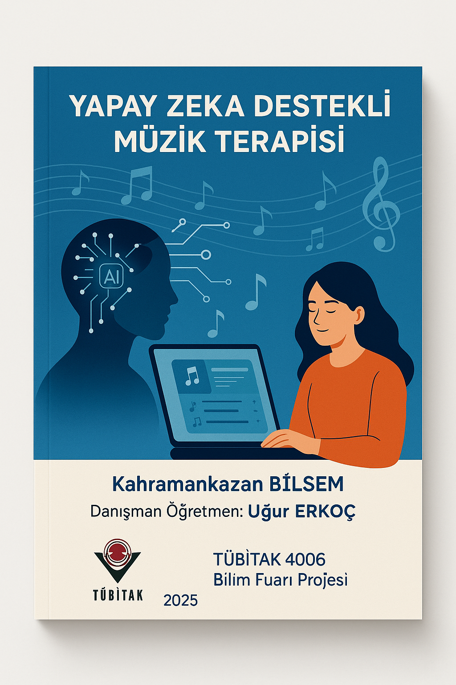
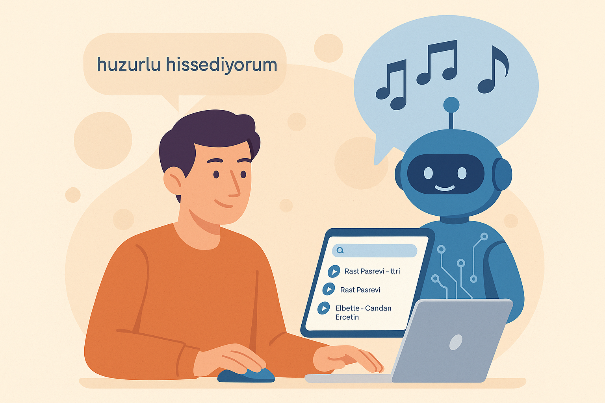
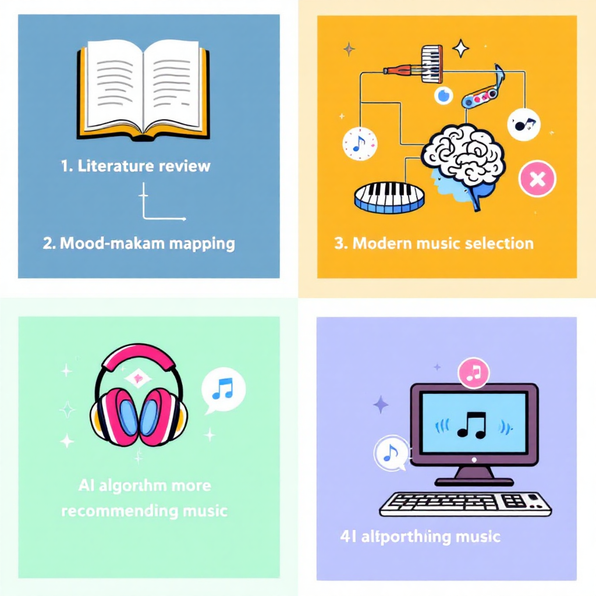

TÜBİTAK 4006 Bilim Fuarı Projesi | Kahramankazan BİLSEM
Bu dijital rehber, Osmanlı dönemindeki müzikle tedavi geleneğini modern yapay zeka teknolojisiyle birleştirerek bireylerin ruh sağlığını desteklemeyi hedefler.
Ruh halinizi yazın, sistem sizin için bir makam, geleneksel eser ve modern parça önersin. Sözlü ya da enstrümantal tercihini belirtmeyi unutmayın.
Sözlü eserler duyguları dışa vurmayı kolaylaştırırken, enstrümantal müzik zihinsel dinlenme sağlar. Duygu yoğunluğuna göre tercih yapabilirsiniz.
 Kullanıcı: "Çok gerginim."
Sistem: Rast makamı önerilir. Osmanlı: Rast Peşrevi. Modern: Elbette, Sadece, A Canım.